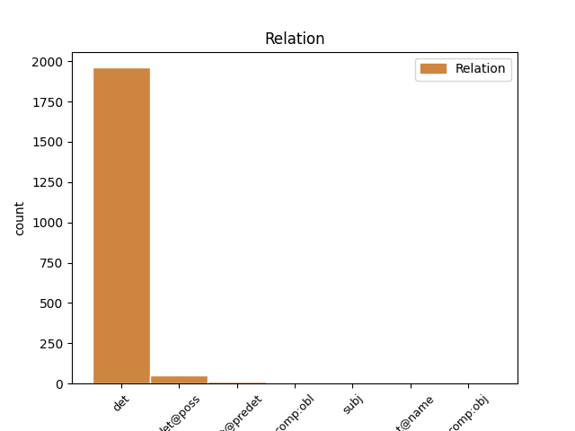
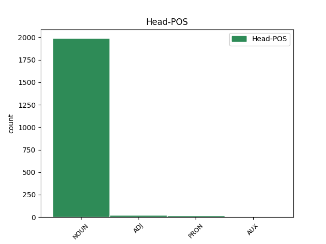
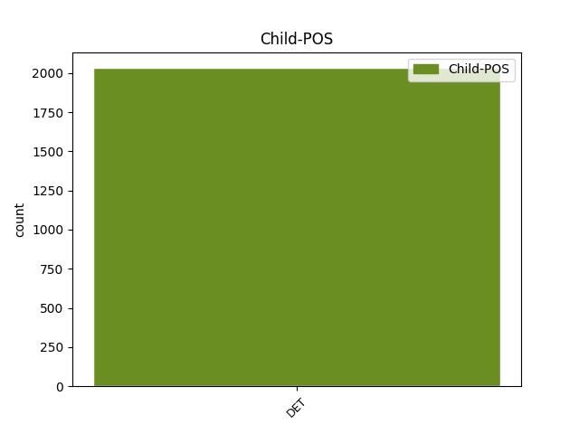

Distribution of features within this leaf



Agreement Rules sorted by frequency.
When the head token is NOUN and the dependent token is DET.
1 Salvini _ _ _ _ 0 _ _ _
2 : _ _ _ _ 0 _ _ _
3 " _ _ _ _ 0 _ _ _
4 A _ _ _ _ 0 _ _ _
5 settembre _ _ _ _ 0 _ _ _
6 fermerò _ _ _ _ 0 _ _ _
7 l' _ _ _ _ 0 _ _ _
8 Italia _ _ _ _ 0 _ _ _
9 per _ _ _ _ 0 _ _ _
10 tre _ _ _ _ 0 _ _ _
11 giorni _ _ _ _ 0 _ _ _
12 " _ _ _ _ 0 _ _ _
13 . _ _ _ _ 0 _ _ _
14 Si _ _ _ _ 0 _ _ _
15 sta _ _ _ _ 0 _ _ _
16 preparando _ _ _ _ 0 _ _ _
17 a _ _ _ _ 0 _ _ _
18 dire _ _ _ _ 0 _ _ _
19 la il DET RD Definite=Def|Gender=Fem|Number=Sing|PronType=Art 20 det _ _
20 stronzata stronzata NOUN S Gender=Fem|Number=Sing 0 _ _ _
21 definitiva _ _ _ _ 0 _ _ _
22 . _ _ _ _ 0 _ _ _
23 [ _ _ _ _ 0 _ _ _
24 comagirl00 _ _ _ _ 0 _ _ _
25 ] _ _ _ _ 0 _ _ _
When the head token is ADJ and the dependent token is DET.
1 #labuonascuola _ _ _ _ 0 _ _ _
2 mix _ _ _ _ 0 _ _ _
3 ( _ _ _ _ 0 _ _ _
4 a _ _ _ _ 0 _ _ _
5 la il DET RD Definite=Def|Gender=Fem|Number=Sing|PronType=Art 6 det _ _
6 buona buono ADJ A Gender=Fem|Number=Sing 0 _ _ _
7 ) _ _ _ _ 0 _ _ _
8 di _ _ _ _ 0 _ _ _
9 #labuonasquola _ _ _ _ 0 _ _ _
10 #labuonasvolta _ _ _ _ 0 _ _ _
11 ( _ _ _ _ 0 _ _ _
12 #lasvoltabuona _ _ _ _ 0 _ _ _
13 ) _ _ _ _ 0 _ _ _
14 #labuonaterra _ _ _ _ 0 _ _ _
15 #labuonanotizia _ _ _ _ 0 _ _ _
16 #labuonastella _ _ _ _ 0 _ _ _
17 #unmondobuono _ _ _ _ 0 _ _ _
When the head token is PRON and the dependent token is DET.
1 @user _ _ _ _ 0 _ _ _
2 RIFORMA _ _ _ _ 0 _ _ _
3 : _ _ _ _ 0 _ _ _
4 una _ _ _ _ 0 _ _ _
5 di _ _ _ _ 0 _ _ _
6 le il DET RD Definite=Def|Gender=Fem|Number=Plur|PronType=Art 7 det _ _
7 tante tanto PRON PI Gender=Fem|Number=Plur|PronType=Ind 0 _ _ _
8 che _ _ _ _ 0 _ _ _
9 i _ _ _ _ 0 _ _ _
10 partiti _ _ _ _ 0 _ _ _
11 hanno _ _ _ _ 0 _ _ _
12 imposto _ _ _ _ 0 _ _ _
13 ( _ _ _ _ 0 _ _ _
14 ahahhha _ _ _ _ 0 _ _ _
15 ) _ _ _ _ 0 _ _ _
16 a _ _ _ _ 0 _ _ _
17 il _ _ _ _ 0 _ _ _
18 Governo _ _ _ _ 0 _ _ _
19 Monti _ _ _ _ 0 _ _ _
20 . _ _ _ _ 0 _ _ _
21 #puttanate _ _ _ _ 0 _ _ _
22 #campacavallochelerbacresce _ _ _ _ 0 _ _ _
When the head token is AUX and the dependent token is DET.
1 @user _ _ _ _ 0 _ _ _
2 sei essere AUX V Mood=Ind|Number=Sing|Person=2|Tense=Pres|VerbForm=Fin 0 _ _ _
3 nà una DET RI Definite=Ind|Gender=Fem|Number=Sing|PronType=Art 2 subj _ _
4 sola _ _ _ _ 0 _ _ _
5 ! _ _ _ _ 0 _ _ _
6 Torna _ _ _ _ 0 _ _ _
7 a _ _ _ _ 0 _ _ _
8 scuola _ _ _ _ 0 _ _ _
9 che _ _ _ _ 0 _ _ _
10 ti _ _ _ _ 0 _ _ _
11 fa _ _ _ _ 0 _ _ _
12 bene _ _ _ _ 0 _ _ _
13 . _ _ _ _ 0 _ _ _
14 #labuonascuola _ _ _ _ 0 _ _ _
Disagree Examples:
1 @user _ _ _ _ 0 _ _ _
2 già _ _ _ _ 0 _ _ _
3 la _ _ _ _ 0 _ _ _
4 faccia _ _ _ _ 0 _ _ _
5 di _ _ _ _ 0 _ _ _
6 la il DET RD Definite=Def|Gender=Fem|Number=Sing|PronType=Art 8 det _ _
7 tua _ _ _ _ 0 _ _ _
8 icon icona NOUN S Gender=Fem|Number=Plur 0 _ _ _
9 allude _ _ _ _ 0 _ _ _
10 ad _ _ _ _ 0 _ _ _
11 un _ _ _ _ 0 _ _ _
12 pene _ _ _ _ 0 _ _ _
13 invisibile _ _ _ _ 0 _ _ _
14 #messaggisubliminali _ _ _ _ 0 _ _ _
1 @user _ _ _ _ 0 _ _ _
2 già _ _ _ _ 0 _ _ _
3 la _ _ _ _ 0 _ _ _
4 faccia _ _ _ _ 0 _ _ _
5 di _ _ _ _ 0 _ _ _
6 la _ _ _ _ 0 _ _ _
7 tua tuo DET AP Gender=Fem|Number=Sing|Poss=Yes|PronType=Prs 8 det@poss _ _
8 icon icona NOUN S Gender=Fem|Number=Plur 0 _ _ _
9 allude _ _ _ _ 0 _ _ _
10 ad _ _ _ _ 0 _ _ _
11 un _ _ _ _ 0 _ _ _
12 pene _ _ _ _ 0 _ _ _
13 invisibile _ _ _ _ 0 _ _ _
14 #messaggisubliminali _ _ _ _ 0 _ _ _
1 @user _ _ _ _ 0 _ _ _
2 Con _ _ _ _ 0 _ _ _
3 i _ _ _ _ 0 _ _ _
4 prezzi _ _ _ _ 0 _ _ _
5 che _ _ _ _ 0 _ _ _
6 adotta _ _ _ _ 0 _ _ _
7 , _ _ _ _ 0 _ _ _
8 non _ _ _ _ 0 _ _ _
9 sempre _ _ _ _ 0 _ _ _
10 a _ _ _ _ 0 _ _ _
11 buon _ _ _ _ 0 _ _ _
12 mercato _ _ _ _ 0 _ _ _
13 , _ _ _ _ 0 _ _ _
14 oltre _ _ _ _ 0 _ _ _
15 a _ _ _ _ 0 _ _ _
16 la _ _ _ _ 0 _ _ _
17 depressione _ _ _ _ 0 _ _ _
18 fa _ _ _ _ 0 _ _ _
19 venire _ _ _ _ 0 _ _ _
20 la il DET RD Definite=Def|Gender=Fem|Number=Sing|PronType=Art 21 det _ _
21 scogliosi scoglioso NOUN S Gender=Masc|Number=Plur 0 _ _ _
22 x _ _ _ _ 0 _ _ _
23 la _ _ _ _ 0 _ _ _
24 " _ _ _ _ 0 _ _ _
25 comodità _ _ _ _ 0 _ _ _
26 " _ _ _ _ 0 _ _ _
27 di _ _ _ _ 0 _ _ _
28 i _ _ _ _ 0 _ _ _
29 sedili _ _ _ _ 0 _ _ _
30 ! _ _ _ _ 0 _ _ _
1 Roma _ _ _ _ 0 _ _ _
2 , _ _ _ _ 0 _ _ _
3 Bertolaso _ _ _ _ 0 _ _ _
4 porta _ _ _ _ 0 _ _ _
5 50.000 _ _ _ _ 0 _ _ _
6 persone _ _ _ _ 0 _ _ _
7 a _ _ _ _ 0 _ _ _
8 i il DET RD Definite=Def|Gender=Masc|Number=Plur|PronType=Art 9 det _ _
9 gazebo gazebo NOUN S Gender=Masc|Number=Sing 0 _ _ _
10 . _ _ _ _ 0 _ _ _
11 A _ _ _ _ 0 _ _ _
12 l' _ _ _ _ 0 _ _ _
13 Aquila _ _ _ _ 0 _ _ _
14 c' _ _ _ _ 0 _ _ _
15 era _ _ _ _ 0 _ _ _
16 riuscito _ _ _ _ 0 _ _ _
17 con _ _ _ _ 0 _ _ _
18 i _ _ _ _ 0 _ _ _
19 tendoni _ _ _ _ 0 _ _ _
20 . _ _ _ _ 0 _ _ _
21 [ _ _ _ _ 0 _ _ _
22 @user _ _ _ _ 0 _ _ _
23 ] _ _ _ _ 0 _ _ _
1 In _ _ _ _ 0 _ _ _
2 Italia _ _ _ _ 0 _ _ _
3 ogni ogni DET DI Number=Sing|PronType=Ind 5 det _ _
4 4 _ _ _ _ 0 _ _ _
5 minuti minuto NOUN S Gender=Masc|Number=Plur 0 _ _ _
6 un _ _ _ _ 0 _ _ _
7 giovane _ _ _ _ 0 _ _ _
8 perde _ _ _ _ 0 _ _ _
9 il _ _ _ _ 0 _ _ _
10 lavoro _ _ _ _ 0 _ _ _
11 . _ _ _ _ 0 _ _ _
12 Tra _ _ _ _ 0 _ _ _
13 un' _ _ _ _ 0 _ _ _
14 oretta _ _ _ _ 0 _ _ _
15 comunque _ _ _ _ 0 _ _ _
16 sarà _ _ _ _ 0 _ _ _
17 tutto _ _ _ _ 0 _ _ _
18 finito _ _ _ _ 0 _ _ _
19 . _ _ _ _ 0 _ _ _
20 [ _ _ _ _ 0 _ _ _
21 @user _ _ _ _ 0 _ _ _
22 ] _ _ _ _ 0 _ _ _